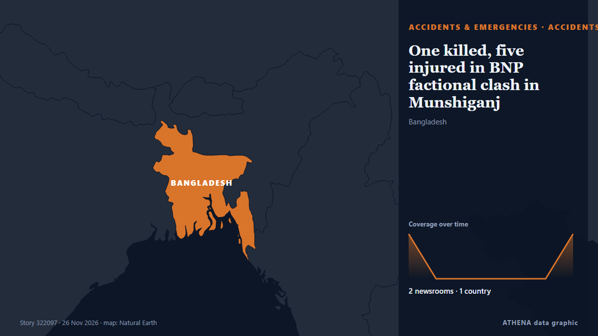

Δυστυχήματα & έκτακτες ανάγκες
ΧορηγούμενοΠαρουσιάζεται από  Cybernetics and Artificial Intelligence Lab Welcome to the Cybernetics and Artificial Intelligence Laboratory, established at the Department of Business Administration of the National and Kapodistrian University of Athens. The lab is headed by Professor Dimitrios Thomakos. The lab aims to do research that can be published in top venues. Our research uses tools and methods of Artificial Intelligence, and lies in the following areas: - Forecasting - Decision making - Cyber security - Finance We are always looking forward to collaborating with exceptional students!
Cybernetics and Artificial Intelligence Lab Welcome to the Cybernetics and Artificial Intelligence Laboratory, established at the Department of Business Administration of the National and Kapodistrian University of Athens. The lab is headed by Professor Dimitrios Thomakos. The lab aims to do research that can be published in top venues. Our research uses tools and methods of Artificial Intelligence, and lies in the following areas: - Forecasting - Decision making - Cyber security - Finance We are always looking forward to collaborating with exceptional students!
Οι τίτλοι των ειδήσεων παρουσιάζονται στα αγγλικά, όπως δημοσιεύτηκαν.

Δυστυχήματα & έκτακτες ανάγκεςOne killed, five injured in BNP factional clash in Munshiganj
A man was killed and several others were injured in a clash between two factions of Bangladesh Nationalist Party (BNP) in Munshiganj over the upcoming union parishad (UP) elections and establishing… από Prothom Alo (English)
Tinubu approves houses, N100m each for families of NAF crash victims
President Bola Tinubu says he has approved three-bedroom flats situated in Abuja to be given to the families of the 25 people who died in the Nigeria Airforce aircraft crash in Igbokoda, Ondo State. από Daily Trust
Pakistan: Emergency teams search for survivors beneath collapsed building
At least one person was killed and 10 others injured when a multi-storey building under construction collapsed in Karachi, on Wednesday 25 November 2026. από Euronews English
Libya’s Parliament Offers Condolences to Egypt Over Cairo Fire
Libya’s House of Representatives has expressed condolences to Egypt following a deadly fire on the Greater Cairo Ring Road that reportedly killed 31 people and injured 21 others. από Libya Review
Uganda: 10 Dead As Truck Plunges Into River in Zombo
[Nile Post] At least 10 people have been confirmed dead and four others seriously injured after a truck carrying cassava flour and passengers lost control and plunged into River Nyagak in Zombo… από AllAfrica
Sindh suspends SBCA chief, other officials over 'negligence' in Karachi building collapse
Rescue personnel and volunteers search for victims in the rubble of the collapsed under-construction building in Karachi on November 25, 2026. — AFPDC East Nasrullah Abbasi and SSP Zubair Sheikh… από Geo News (English)
A year after Hong Kong's deadly fire, survivors struggle with loss and lingering sense of injustice
Even as life kept pushing them forward, some Wang Fuk Court fire survivors say justice has yet to be served. από CNA (Channel NewsAsia)
31 killed in fire after vehicle overturns in Egypt - UPDATED
A vehicle carrying petroleum products overturned and caught fire on a major ring road in Cairo. από The Straits Times
Egypt mourns dozens of deaths in horrific road accident
The two men seen in what has instantly become an indelible image were frantically trying to warn motorists to stay away from a fuel tanker that had overturned on a busy road before it exploded… από The National
DIRCO probes reports of South African pilot’s capture in Eastern DRC
DIRCO is investigating reports that a South African pilot has been captured in the conflict-hit eastern Democratic Republic of the Congo (DRC), but says the individual’s nationality has not yet been… από IOL
Flinders Island sergeant shot on duty 'still has long way to go', family says
The brother of a police officer shot while on duty on Flinders Island says he is humbled by the community support shown to his family. από ABC News Australia
At least 31 dead after fuel tanker fire in Egypt
Thirty-one people were killed and 21 wounded in a fire after a vehicle carrying petroleum products overturned on a major ring road in Egypt, authorities said on Wednesday. από CBC News (alternative feed)
Plane crash off the coast of Mississippi kills 6, including 2 children
WASHINGTON, Nov 25, (AP): A small plane crashed Tuesday off the coast of Mississippi, killing the six people, including two children, on board, according to the U.S. από Arab Times
Türkiye mourns 5 soldiers killed in military helicopter crash
Türkiye is mourning five soldiers killed when a military helicopter crashed during a training flight in the central province of Eskişehir, with condolences delivered to their famil... από Daily Sabah
Bristol City 1-1 Wrexham recap: Reaction after Cam Pring fires Robins to draw at Ashton Gate
Live updates from Ashton Gate, where Michael Skubala and Bristol City host Wrexham in the Championship (7:45pm kick-off) από Bristol Post
Hanoi gas explosion kills 6, injures 10
Six people were killed and 10 others injured in a gas explosion at a food shop on Nguyen Van Tuyet Street in Hanoi on Tuesday, prompting authorities to evacuate nearby residents and launch an… από Tuoi Tre News
Ras Al Khaimah bus-truck collision kills 13, injures 14
Two more passengers die in hospital following early-morning crash; Indian nationals among the victims. από News of Bahrain
Every Woman and Girl Has the Right to Live Free from Violence and Fear
The United Nations Human Settlements Programme (UN-Habitat) says every woman and girl has the right to live free from violence and fear. από Hasht-e Subh Daily
Lagos Tightens Fire Safety Regulations to Protect Business Investments
The Lagos State Government is strengthening fire safety regulations and expanding emergency response infrastructure to protect business investments, reduce property losses and minimise disruptions to… από ThisDay (Nigeria)
PM Shah calls for zero tolerance against gender-based violence
Key Takeaways: PM Balendra Shah called for zero tolerance against gender-based violence He emphasized protecting survivors, ensuring justice and ending impunity The prime minis... από The Himalayan Times
Southern Motorway crash between Takanini and Papakura leaves one person critical
Two southbound lanes are blocked and delays are expected. από New Zealand Herald